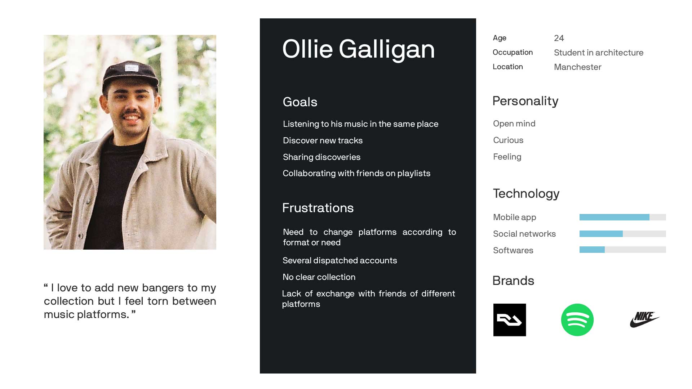

Ring Mix
Context
Initially, the idea was to respond to a personal frustration. In fact, over the years, like many music lovers, I have accumulated several music platform accounts for various reasons.
That’s why I switch daily from Youtube, Soundcloud, Deezer, etc. to listen or search for new music.
In addition to wasting time, this diversity leads to other problems. In the group of dj of my school, we wanted to make shared online playlists together but we couldn’t agree on which platform.
I intended to find out if the situation was recurrent and if so, to apply the UX methodology in order to propose a coherent product.
- 2020
- 2 weeks
- Personnal project

User Experience Design Methodology
User Experience design (UXD) places the user at the center of the product design. Understanding who is involved, their frustrations, their context of interaction, their goals and incorporate the findings into the product design to create something that better fits their needs.
I consider that after the first development the project will follow an agile methodology knowing that it is a digital project developed by a small team. At each sprint, small UX reasearches will inform decisions and validate the path.
Start with a good design, then test and learn as you go to perfect it.
Research
1.A. Understand the situation. User research, Benchmark.
First, to know more about the situation, I created a survey on a large community of music diggers:
Quantitative information, “what ?”. Estimate the platform repartition and the behavior. In sum, is the project is needed by the community.
Qualitative information, “why ?”. Understand the reasons behind the platform switch.


This is confirmed by the interviews. Users change platforms for the format of songs and according to their needs (search, listening, playlist, etc.).
1.B. Refining the problem and the aim user. Pain points-Goals, Persona, Metrics.

Now that we know the objectives, we need to fix how to measure them. Metrics will help us to see which version of the product is better.
Define
2. Connect research to business. Refining the goals and prioritize. User stories, MVP.
I use my research findings to start describing my future product. To do so, I describe the actions of the user in the future ideal app by user stories.
To find them I brainstorm solutions based on the need of the user and my ideas. I regroup the user stories by thematic to make sense of it all. Then, I start prioritizing to address the main value proposition first.
Product features:
…
Explore
3.A. Brianstorm and Sketchs.
Now we are ready to propose coherent designs. But before diving deep in one proposition it’s more interesting to diverge. Some ideas will be unusable but all can be useful.

3.B. Low-fidelity Prototype.
I produced on Figma a low-fi prototype of the application based on the sketched wireframes of each screen. It will be used to try the app design remotely with users.
Users tend to be more honest with low-fidelity prototypes, it shows that you are still open to discuss the design.

Test
4. Confront the design to reality. User testing loop.
User population, situations.
The user population is selected with specific criteria to limit the risk of avoiding one user category and understand deeper why some users failed. You determine the user criteria that could affect the experience. Furthermore, we could have set different situations to test like applying a time constraint or not.
Scenario test.
5 scenarios were tested by each user. They regroup the main actions we can imagine with the app.
During the test, the user has to speak to express his mental activity.
The user's expression is of great value because it is an opportunity to find out directly why there is a problem.

The tests were all successful (completion rate 100%). This is a sign that this design is a good start. Nonetheless, the users pointed out some confusion points.
Qualitative research. User interviews.
After the test, I had an interview with each user. The opportunity for him to propose solutions and for me to clarify certain points.
What would have made the app better?
Main recommendations:

Implementing the changes.
Here, the changes have been relatively minor and quick to integrate so I went directly to the creation part. Otherwise, I could have done a new version of the low-fi prototype and another user test. At this stage, it is easy to do changes.
Create
5.A. Create the user interface. Moodboard, Graphic charter, Mockup.
User population, situations.
Now that I am more confident in my design, it is worth the time to develop the graphic chart.
To begin, I looked at the different UI trends on music platforms and other apps and picked elements. There is no need to reinvent the wheel and by using standards the user will feel less lost.
Graphic charter will assure the consistency of our app: Typography, Spacing, Color, UI Elements, States, Logo.
Here the user interface is minimalist/flat design. Here the user interface is minimalist/flat design. The app highlights playlist's covers that the user can change. They give personality to the page. All the icons were created inside Illustrator and transfer to Figma. The colors have been chosen with the help of material.io color tool. Light blue and strong red for a fresh and energic visual.
5.B. Mid-fidelity Prototype.
Communicate
6. Market the idea. Create a first user base.

Develop & finalise
7.A. Define the implementation plan for the functional product.
To develop the solution efficiently we need an implementation plan which sets our priorities.
It is based on the first plan we did (part 2.) but we refine (grooming) the user stories of the plan in smaller and more precise actions if needed. One user story can imply many things like a search field, a filter, a search result page, etc.​​​​​​​
Technically, the application will mainly use the APIs of the different platforms: Spotify API, Deezer API, Soundcloud API, etc.
The design is never definitive and can always evolve in dialogue with the developers and according to the technical constraints.
7.B. Supply the product backlog. Monitor and perfect the product.
We use the new feedbacks we will receive to supply the product backlog and the UX cycle will repeat: explore, test, etc. Those can be bugs, user requests, requirements, user stories, or new features.
Main challenges I see for the moment:
That is all for now, thanks for reading. Do not hesitate to test the prototype and share your thoughts!